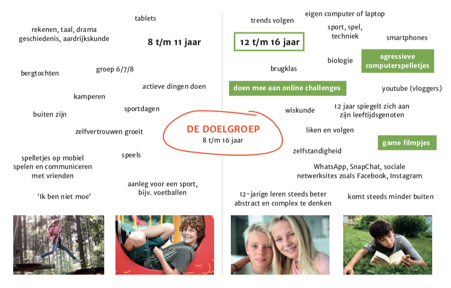
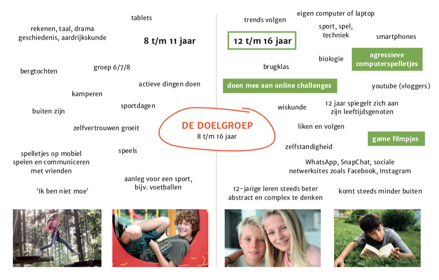
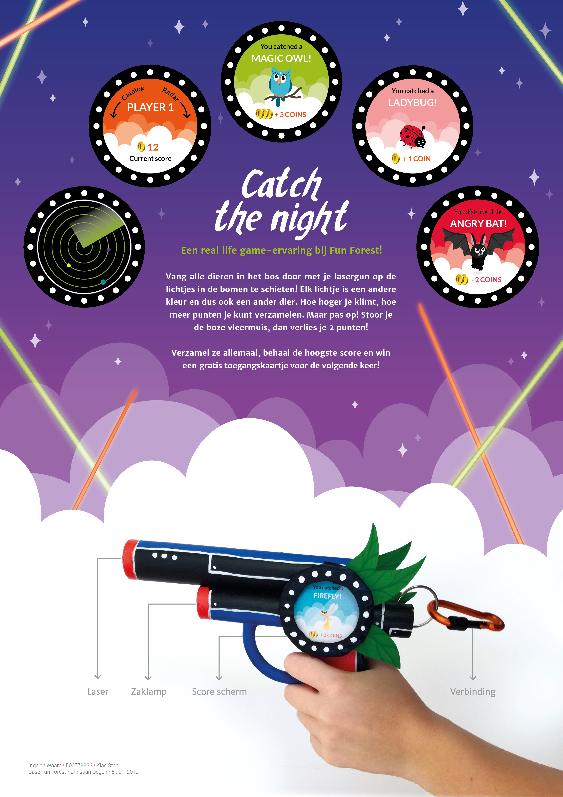

Conceptualiseren
12 t/m 16 jaar // User Experience // Total concept
Situatie
De opdrachtgever Fun Forest wil via een totaalconcept en een interface die geschikt is voor kinderen van 12 t/m 16 jaar, hun meer betrekken bij het parcours en zorgen dat ze er een band mee opbouwen. De aanleiding van deze opdracht was dat bezoekers niet gespreid over de dag komen, maar alleen overdag. Ook komen de bezoekers vaak niet snel terug en gaan ze snel weg.
 

De opdracht
Mijn taak was om een concept te bedenken waardoor bezoekers zich meer betrokken voelen bij het parcours en dat het concept ervoor zorgt dat niet iedereen overdag komt, maar ook in de avond! Fun Forest organiseert namelijk twee keer in het jaar een Halloween feest in de avond, waarom voeren we dit niet door naar een andere game in de avond. Gamification werkt goed bij de jonge doelgroep en aangezien de game Fortnite een succes lijkt, wil ik een soort lasergun idee gebruiken in het concept.

Activiteiten
Om inzichten te krijgen voor een concept heb ik gekeken naar wat de doelgroep zo al doet in hun vrije tijd. Daarvan heb ik een persona gemaakt. Verder heb ik recensies bekeken over Fun Forest. Waar irriteren bezoekers zich aan en waarom willen ze niet vaker terug komen? Daarna ben ik met de inzichten die ik had gaan brainstormen. Met het idee ben ik een storyboard gaan maken. Hier en daar was het iets te aggresief voor de gekozen doelgroep en heb ik wat aanpassingen gemaakt. De lasergun heb ik fysiek uitgewerkt en ook geïtereerd om het kindvriendelijker te maken.

Resultaat
Het resultaat was een real life game-ervaring bij Fun Forest genaamd Catch the Night. Kinderen kunnen met een lasergun diertjes in het bos verzamelen. Maar pas op, krijg je een vleermuis dan gaan er punten af! Wie de hoogste scoren heeft, wint een gratis toegangskaartje voor de volgende keer. De lasergun is makkelijk te bevestigen aan het klimpak wat de kinderen om krijgen. Ook zit er een zaklamp in voor kinderen die het eng vinden in het donker. Het spel is namelijk in de avond te spelen om de lichtjes in het bos goed te kunnen zien. De opdrachtgever (docent Christian Degen) was zeer enthausiast over dit concept en ik heb er zelfs een prijs mee verdiend.
Feedback
Feedback die ik kreeg ging veelal over de veiligheid en de sfeer die het lasergun uitstraalt. Rond de tijd van dit project waren er veel terroristische aanslagen en hier moest ik goed rekening mee houden in mijn project. De lasergun moest dus niet te echt lijken en meer fantasie-achtig. Dit was feedback waar ik zelf in eerste instantie niet gelijk aan dacht dus daarom zie je dat testen en feedback krijgen van belang is.